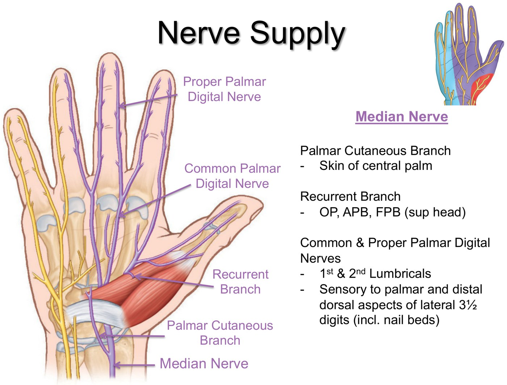
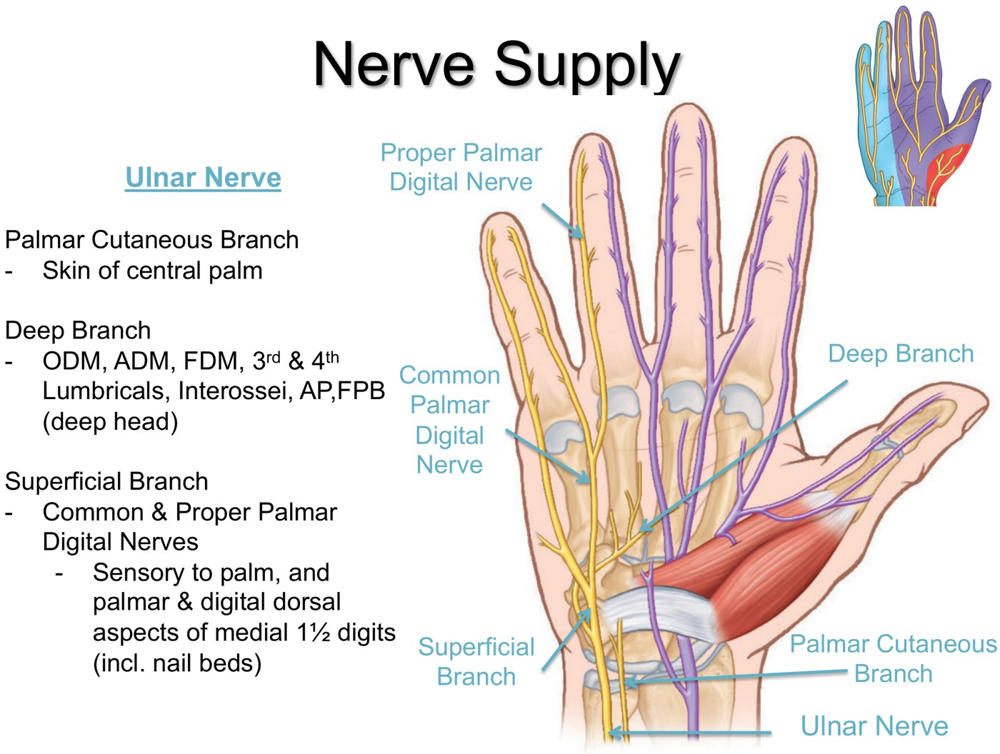
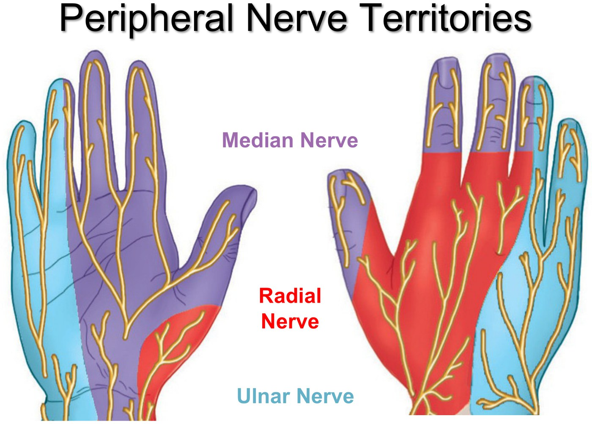
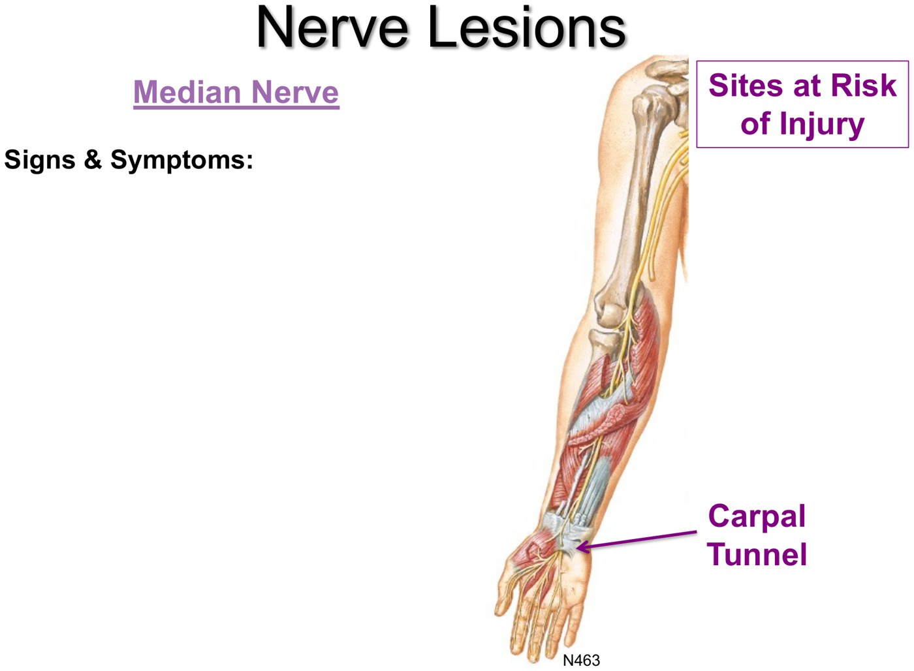
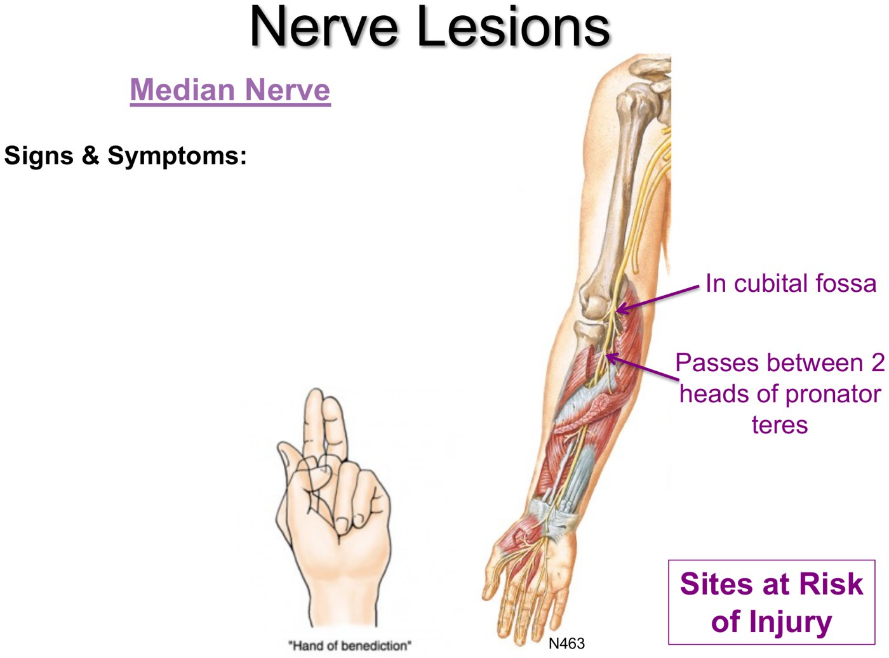
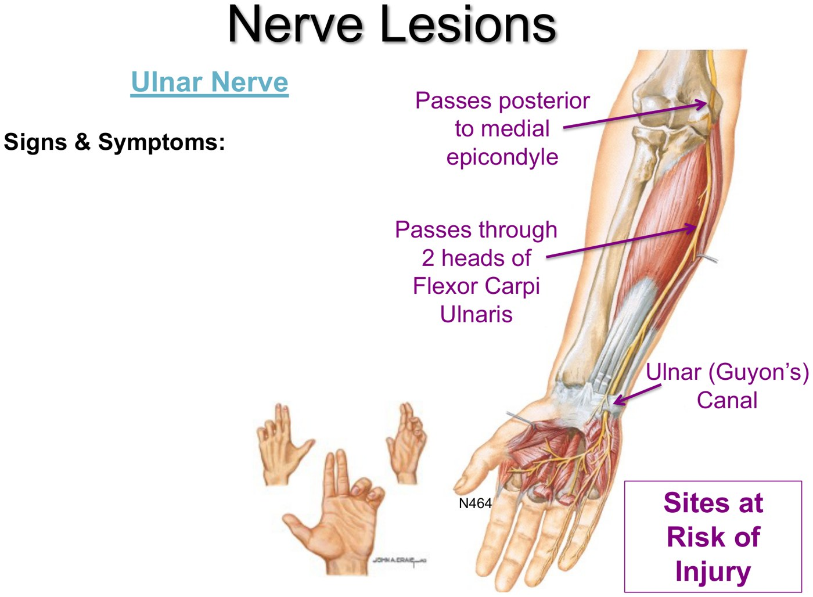
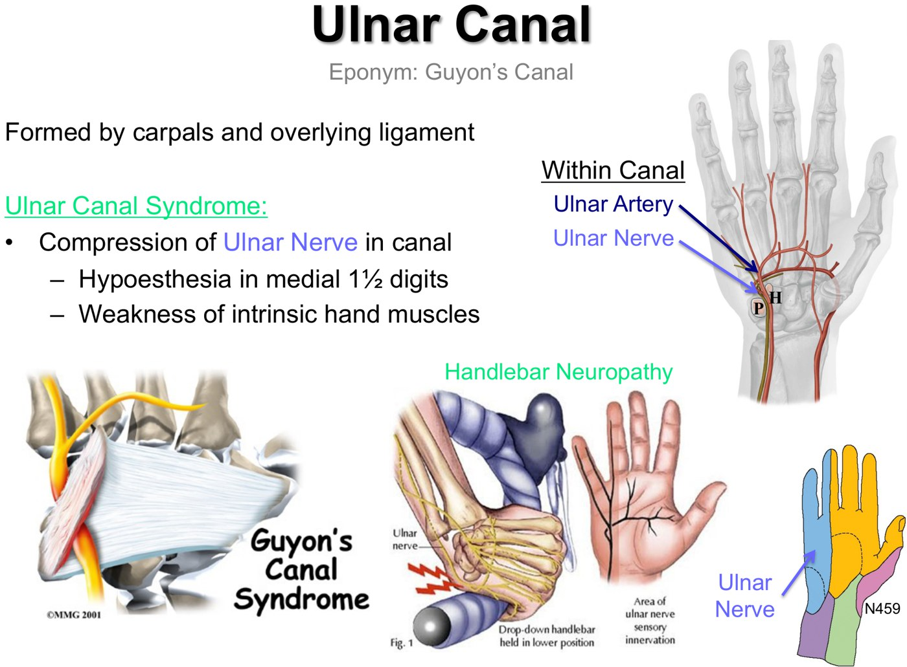
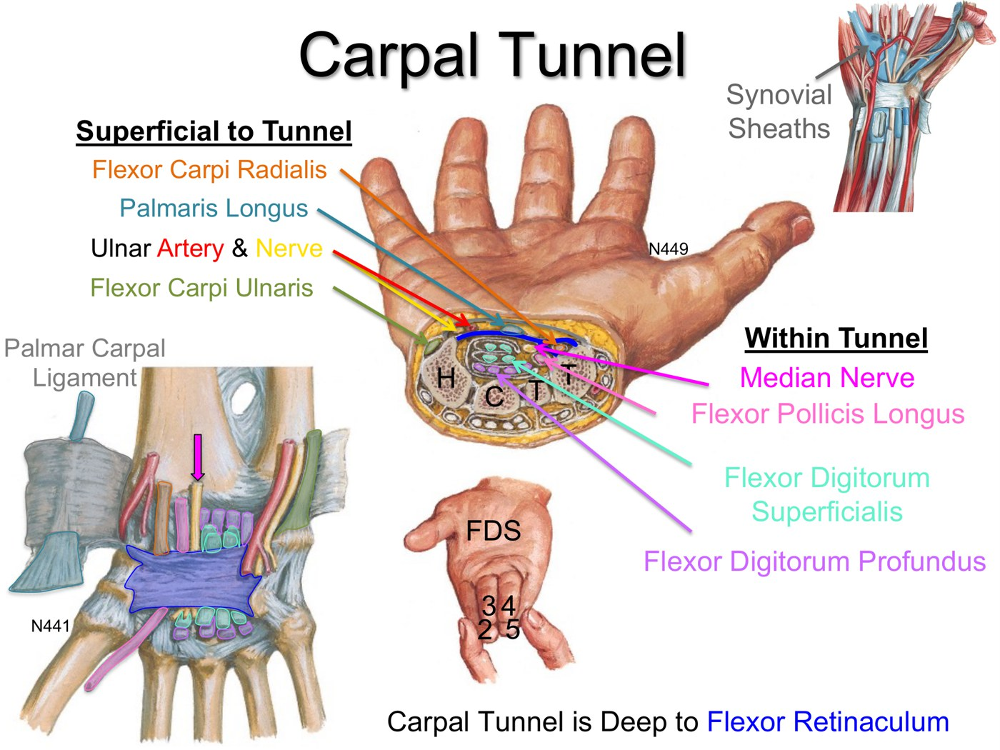

Clinical Approach to the Wrist & Hand, Part 2
- Median nerve in the hand. Its palmar cutaneous branch leaves before the carpal tunnel (central palm, so it's spared in carpal tunnel syndrome). The recurrent branch runs superficially to the thenar muscles (OP, APB, FPB): a shallow cut on the lateral palm can sever it and lose opposition. It also supplies lumbricals 1–2 and the skin of the lateral 3½ digits (palmar side plus the dorsal tips).
- Ulnar nerve in the hand. Through Guyon's canal (pisiform to hook of hamate). Superficial branch: skin of the medial 1½ digits. Deep branch: hypothenar muscles, lumbricals 3–4, adductor pollicis, all the interossei and the deep head of FPB.
- Lesions. Median at the wrist: thenar wasting, no opposition, numb thumb + 2½ fingers. Median at the elbow: the hand of benediction on making a fist. Ulnar at the elbow: the claw hand (digits 4–5) plus weak wrist flexion that pulls radially. Ulnar at the wrist (ulnar canal syndrome): numb medial 1½ digits and weak intrinsics, but finger flexion is fine and there's no radial deviation.
- Carpal tunnel syndrome, "the bread and butter peripheral nerve diagnosis": numbness and tingling in median territory, worse at night and with a bent wrist (driving, holding a phone); APB weakness only when advanced; median forearm muscles normal; Tinel's and Phalen's. Main differential: C6 radiculopathy. Treatment: education, a rigid wrist splint at night (the mainstay), a steroid injection, then carpal tunnel release.
- Ulnar neuropathy at the wrist: mostly direct pressure on Guyon's canal (handlebar neuropathy). Numb digits 4–5 and intrinsic wasting; main differential C8 radiculopathy (and ulnar neuropathy at the elbow). Take the pressure off (padded gloves, new handlebars, gait-aid handles); Guyon's release rarely.
- EMG/NCS separate nerve from muscle or bone, locate the lesion (wrist vs elbow vs root) and grade its severity.
Learning Objectives
- Identify the important functional anatomy of the upper extremity as it pertains to clinical presentations: the nerve supply of the hand and the carpal tunnel and its contents.
- Create a differential diagnosis and management plan for upper extremity numbness, weakness and pain.
- Describe the anatomic basis, presentation and management of carpal tunnel syndrome and ulnar neuropathy at the wrist.
Dr. Charys Martin (nerve supply of the hand, 33 minutes) and the wrist and hand neuropathies recording (8 minutes), plus the 10-minute Clinical Approach to the Upper Extremity quiz. This is Part 2; Part 1 covered distal radius and scaphoid fractures and the hand muscles. With it, the whole upper limb is done, so nerve lesion cases can be followed from the brachial plexus to the fingertips. This module is prep for the Distal Upper Extremity lab.
Nerve Supply of the Hand
Dr. Martin's recording and its knowledge checks.
The Median Nerve in the Hand
It enters the hand through the carpal tunnel, deep to the flexor retinaculum.
| Branch | Where it goes | Why it matters |
|---|---|---|
| Palmar cutaneous branch | Leaves proximal to the carpal tunnel to the skin of the central palm | Doesn't pass through the tunnel, so its patch of mid-palm is spared in carpal tunnel syndrome |
| Recurrent branch | Runs a superficial course just distal to the tunnel to the thenar muscles: abductor pollicis brevis, opponens pollicis, flexor pollicis brevis (superficial head) | At risk with a superficial cut to the lateral palm. It must be repaired, or the thenar muscles atrophy and opposition is lost. Dr. Martin calls the median nerve the most important nerve in the hand. |
| Common and proper palmar digital nerves | Motor to lumbricals 1 and 2; sensory to the lateral palm and the palmar lateral 3½ digits, plus their distal dorsal halves and nail beds | Sets the median sensory map you test on exam |

The Ulnar Nerve in the Hand
Two cutaneous branches leave proximal to the wrist: the palmar cutaneous branch (over the flexor retinaculum and palmar aponeurosis to the medial palm) and the dorsal cutaneous branch (medial half of the back of the hand and the proximal dorsal medial 1½ digits). The nerve itself passes through the ulnar (Guyon's) canal, a fibro-osseous arch between the pisiform and the hook of the hamate, enters the hand lateral to the pisiform, and splits in two.
| Branch | Supplies |
|---|---|
| Superficial branch | Skin of the palm and the palmar (and dorsal tip) skin of the medial 1½ digits, via common and proper palmar digital nerves |
| Deep branch | The hypothenar muscles (ODM, ADM, FDM), lumbricals 3 and 4, adductor pollicis, all the interossei and the deep head of FPB; sensation to the metacarpals and proprioception from the joints |

The ulnar nerve's branches. Slide from the deck (Netter).
Cutaneous territories: median, ulnar, radial. Slide from the deck.| Nerve | Skin of the hand (the knowledge-check answer key) |
|---|---|
| Median | The lateral 3½ palmar digits and the dorsal distal 3½ digits |
| Ulnar | The medial 1½ digits, palmar and dorsal |
| Radial (superficial branch) | The lateral dorsum of the hand, not including the distal digits |
Knowledge checks
Which of these doesn't pass through the carpal tunnel: median nerve, FDS tendons, FDP tendons, FPL, ulnar artery? → the ulnar artery. It runs with the ulnar nerve through Guyon's canal, superficial to the flexor retinaculum.
Match each compartment to its main nerve. → intrinsic hand muscles: ulnar; anterior arm: musculocutaneous; anterior forearm: median; posterior forearm: radial.
Feedback points: thumb and finger movements use the midline of the hand as the reference, and different hand presentations point to lesions at different places along a nerve.
Nerve Lesions in the Hand
| Lesion | What you see |
|---|---|
| Median nerve: usually forearm or wrist, most often the carpal tunnel | |
| At the wrist (carpal tunnel, or a wrist laceration, since the nerve lies close to the surface) | Paralysis and wasting of the thenar muscles and lumbricals 1–2. Opposition is impossible, fine control of digits 2–3 is impaired, and sensation is lost over the thumb and adjacent 2½ fingers. |
| Recurrent branch only (a minor cut over the thenar eminence) | Thenar paralysis, loss of opposition |
| At the elbow (cubital fossa, or between the two heads of pronator teres) | Loss of PIP and DIP flexion (FDS, FDP) and MCP flexion (lumbricals) of digits 2–3: the "hand of benediction" when trying to make a fist |
| Ulnar nerve: behind the medial epicondyle (most common), between the heads of FCU, at the wrist, in the hand | |
| Proximal (e.g. at the elbow) | Extensive motor and sensory loss in the hand. Wrist flexion is weak and the hand is pulled radially by FCR (no FCU). Digits 4–5 can't flex at the DIP, the MCPs hyperextend and the IPs can't straighten: the ulnar "claw hand", from the unopposed extensors and FDP once the interossei waste. |
| At the wrist (Guyon's canal: ulnar canal syndrome) | Reduced sensation in the medial 1½ fingers and weak intrinsic hand muscles. Digits 4–5 may claw, but unlike a proximal lesion their flexion is intact and there's no radial deviation. |

Median nerve at risk: the carpal tunnel. Slide from the deck (Netter); a photo of a patient's hands with thenar wasting is left out.
Median nerve at the elbow and the hand of benediction. Slide from the deck (Netter); photos of patients' hands are left out.
Ulnar nerve sites at risk and the claw hand. Slide from the deck (Netter); a photo of a patient's hand is left out.
Guyon's canal and handlebar neuropathy. Slide from the deck.| Brachial plexus injury | Roots | Mechanism | Result |
|---|---|---|---|
| Upper: Erb–Duchenne palsy | C5–C6 (superior trunk or roots) | An excessive increase in the neck–shoulder angle: thrown from a motorcycle, a newborn's neck over-stretched in delivery | "Waiter's tip": shoulder adducted, arm medially rotated, elbow extended; numb lateral upper limb |
| Lower: Klumpke paralysis (less common) | C8–T1 (inferior trunk or roots) | The upper limb suddenly pulled upward: a baby's arm pulled in delivery, grabbing something to break a fall | Affects the ulnar nerve: weak intrinsic hand muscles, a claw hand |
The Carpal Tunnel
An osseofibrous tunnel. Its floor is the carpal bones (hamate, capitate, trapezoid, trapezium) and its roof the flexor retinaculum (transverse carpal ligament), which runs from the scaphoid and trapezium to the pisiform and hook of the hamate.
| Within the tunnel | Superficial to the tunnel |
|---|---|
| Median nerve, flexor pollicis longus, the 4 FDS tendons and the 4 FDP tendons, in their synovial sheaths | Flexor carpi radialis, palmaris longus, the ulnar artery and nerve, flexor carpi ulnaris |

Anything that shrinks the tunnel squeezes it, and the median nerve is the most sensitive structure inside. The commonest cause is inflammation of the synovial sheaths (these line tendons running through osseofibrous tunnels to cut friction); fluid retention, infection and overuse can swell them too. Compression numbs the lateral palm and lateral 3½ digits and weakens the thumb's intrinsic muscles, but not the mid-palm patch of the palmar cutaneous branch.
Wrist and Hand Neuropathies
The neuropathies recording: two distal neuropathies, one per nerve.
Carpal Tunnel Syndrome
Compression of the median nerve at the wrist. By far the most common nerve problem seen anywhere in the body: "the bread and butter peripheral nerve diagnosis".
| Causes | Examples |
|---|---|
| Extrinsic (less space) | Fracture; flexor tenosynovitis (the finger flexor tendons share the space; probably part of "repetitive use" CTS, e.g. typing); ganglia; inflammation (e.g. RA); pregnancy (edema, quite common); acromegaly |
| Intrinsic (a more susceptible nerve) | Diabetes, amyloidosis, alcohol |
| Idiopathic | Very common; perhaps an anatomically smaller tunnel |
| Clinical presentation | Detail |
|---|---|
| Numbness and tingling in median territory | The main symptom. Often worse at night (hands tucked under the head) and with a flexed or extended wrist (driving, holding a phone), because tunnel pressure rises in those positions. |
| Thumb weakness (APB) | Only once it's advanced enough to disrupt the motor fibres |
| Median function above the tunnel is normal | All the median-supplied forearm muscles work, since the nerve is fine until the compression point |
| Tinel's sign | Tapping over the median nerve at the base of the hand sends tingling into median territory |
| Phalen's sign | Holding both wrists hyperflexed, backs of the hands together, brings on numbness and tingling in the fingers |
The main item is C6 radiculopathy: C6 and the median nerve both cover the thumb, so a numb thumb could come from the neck (with symptoms down the lateral arm) rather than the tunnel. Also consider tendinopathy around the thumb (tingling isn't always neurologic) and CMC osteoarthritis at the base of the thumb. EMG/NCS objectively test the sensory and motor nerve, the neuromuscular junction and the muscle: they separate nerve from muscle or bone, tell CTS from C6, and grade how damaged the nerve is (for prognosis and planning). You don't need the details of how they work yet.
A common problem. Explain which hand positions provoke it, and that caught early it's quite reversible with simple non-invasive care.
A rigid wrist–hand orthosis worn overnight only: it holds the wrist near neutral, widening the tunnel and lowering its pressure for the hours you sleep. It can reverse mild and sometimes moderate CTS. Avoid aggravating positions and vibratory tools.
Not oral or topical drugs, but a corticosteroid injection into the carpal tunnel to shrink the swelling. Often not long term if the swelling returns; most useful when the cause is reversible (e.g. an RA flare being brought under control).
A carpal tunnel release: the roof (flexor retinaculum) is cut, giving the nerve all the space it wants. Very effective.
Ulnar Neuropathy at the Wrist
The elbow is by far the commonest place for the ulnar nerve to get into trouble (see 8.7), but Guyon's canal is a second entrapment point, a tight space it shares with the ulnar artery.
| Ulnar neuropathy at the wrist | |
|---|---|
| Causes | Mostly extrinsic (intrinsic nerve problems like diabetes rarely cause it here): fracture of the carpal bones, ganglia, inflammation, and most commonly direct compression: handlebar neuropathy in cyclists, or pressure from crutches and canes |
| Presentation | Hypoesthesia of the medial 1½ digits (4 and 5) and intrinsic hand muscle weakness; when advanced, a scooped-out look between the thumb and index finger and along the hand |
| Differential | Main item: C8 radiculopathy (also numbs digits 4–5); also ulnar neuropathy at the elbow and tendinopathy. EMG/NCS tell nerve from muscle or bone, elbow from wrist from C8, and grade severity. |
| Management | Education about hand position and pressure (reversible if caught early). Relieve the pressure: padded gloves, new handlebars, adjusted gait-aid handles. Few drugs or injections (it's mechanical). Guyon's (canal) release if needed. |
Knowledge check
Numbness and tingling in the index finger and thumb: which would NOT be high on your differential? → C8 radiculopathy, ulnar neuropathy at the elbow and ulnar neuropathy at the wrist. The index finger sits in the C6 dermatome and median territory, so carpal tunnel syndrome and C6 radiculopathy both fit; ulnar and C8 problems numb digits 4 and 5.
Testing Spinal Cord Levels
From Dr. Martin's notes, for reference.
| Level | Movement (myotome) | Skin (dermatome) |
|---|---|---|
| C5 | Arm abduction, elbow flexion | Lateral elbow |
| C6 | Elbow flexion, wrist extension | Anterior distal thumb |
| C7 | Elbow extension, wrist flexion, finger extension | Anterior distal middle finger |
| C8 | Finger flexion | Anterior distal little finger |
| T1 | Finger abduction and adduction | Medial elbow |
Clinical Approach to the Upper Extremity Quiz
The module's 10-minute quiz, mostly on Part 1's fractures. The radiographs and clinical photos aren't shown; the answers and the feedback are below.
A 26-year-old falls off a mountain bike onto her wrist
Best x-ray description? → intra-articular, shortened radius, dorsally tilted radius.
Initial treatment? → closed reduction and immobilization: displaced fractures are reduced and immobilized first.
After closed reduction and casting under a hematoma block, is the reduction satisfactory? → no: neither the length nor the articular tilt is corrected.
She has ORIF. Three months later she suddenly can't flex the thumb's IP joint; sensation is normal. → flexor pollicis longus rupture. No sensory symptoms, so not carpal tunnel syndrome; an anterior interosseous nerve injury would also weaken FDP to the index and middle fingers, and nerve injuries show up right after the injury or surgery; the first dorsal interosseous doesn't flex the thumb IP; adhesions appear soon after surgery, not at three months.
An 81-year-old trips on a rug (type 2 diabetes, COPD)
Displaced distal radius fracture, closed reduction and cast; the post-reduction film still shows a short, dorsally tilted radius. Plan? → cast until it heals, then range-of-motion and strengthening exercises. The injury is forgiving in older people, and surgery doesn't beat closed treatment.
Three days later: more pain, numb thumb, index and middle fingers, pain on passive finger movement. → split the whole length of the cast and padding down to skin, and elevate the arm. The cast is too tight, causing acute carpal tunnel syndrome and possibly early compartment syndrome. Reassess every 15–20 minutes. Don't give steroids or stronger painkillers, which can mask compartment syndrome. His symptoms settled within 60 minutes; he went home in a split (bivalved) cast.
A 63-year-old with 24 hours of index finger pain after gardening
Increasing pain on the palmar side of the finger and less movement; redness along the palmar finger. Two most likely? → the key gives flexor tenosynovitis and septic arthritis. The feedback: the redness sits over the flexor tendon sheath, so cellulitis (usually worse dorsally) is less likely; septic arthritis hurts with joint movement but isn't tender along the sheath; the skin injury makes gout and psoriasis unlikely. It was flexor tenosynovitis with all the cardinal signs, treated with irrigation and debridement.
A 19-year-old motocross racer hurt his wrist yesterday
Pain at the base of the thumb and radial wrist, swelling and snuffbox tenderness, normal x-rays. → cast it and re-x-ray in 10 days. Clinically it's a scaphoid fracture until proven otherwise: be suspicious. Healing makes a fracture easier to see at 10–14 days; get a CT if suspicion remains and the second films are still normal.
Built from Dr. Charys Martin's “Clinical Approach to the Wrist & Hand Part 2” module: the nerve-supply recording, the neuropathies recording, the knowledge checks, the Clinical Approach to the Upper Extremity quiz and its feedback, the 23-slide detailed deck and Dr. Martin's notes. Left out and described in text: photos of patients' hands (thenar and intrinsic wasting), the quiz radiographs and clinical photographs, and the closing images. Notes: the ulnar slide labels its palmar cutaneous branch "skin of central palm"; the notes say the medial palm, which is followed. The notes and slides split FPB (superficial head median, deep head ulnar); Part 1's recording treats it as wholly median. The quiz key for the finger infection marks septic arthritis as one of the two answers even though its feedback argues against it. Caption corrections: flexor retinaculum (“flexor killam”, “flexor retina vacuum”), median nerve (“medial nerve”), Tinel's and Phalen's signs (“tunnels and fail in signs”, “failing sign”), radiculopathy (“ridiculous A3”, “reticular apathy”, “radicchio apathy”), abductor pollicis brevis (“abductor pulses brevis”), orthosis (“Sosa's”), carpometacarpal (“capo metacarpal”), Guyon's canal (“Gwynn's canal”, “Galen's canals”, “Gans canal”), hypoesthesia (“hypoxemia”), pronator teres (“pro Nader um Terry's”) and flexor digitorum superficialis (“flexor digital arm superficial”).